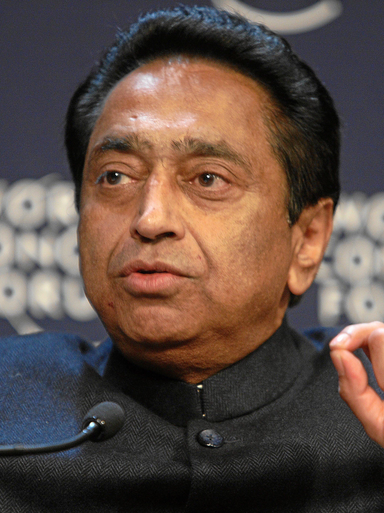
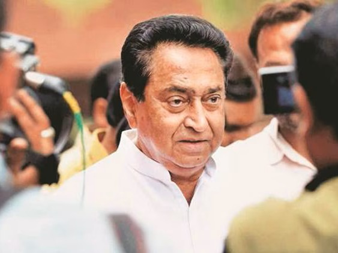

Senior Congress Leader · 9-Time Member of Parliament
For over five decades, Kamal Nath has stood at the vanguard of Indian democracy — a leader whose vision has shaped national policy, transformed his constituency of Chhindwara, and represented India on the world stage. From the corridors of Parliament to the negotiating tables of the World Trade Organization, his legacy is one of unwavering service, strategic governance, and an abiding commitment to the people of India.

Introduction
Kamal Nath, born on November 18, 1946, in Kanpur, Uttar Pradesh, is one of India's most seasoned and influential political leaders. With a parliamentary career spanning over half a century, he has earned the distinction of being elected nine consecutive times as Member of Parliament from the Chhindwara constituency in Madhya Pradesh — a record that stands as a testament to the profound trust and enduring bond he shares with the people he represents. His journey from a young political activist to a senior Congress leader, Union Cabinet Minister, and Chief Minister of Madhya Pradesh is a story of dedication, strategic acumen, and an unyielding commitment to progressive governance.
Kamal Nath's political career began in earnest during the early 1970s when he entered the Indian National Congress and quickly rose through the ranks. He was first elected to the Lok Sabha in 1980 from Chhindwara, a constituency that was historically considered a stronghold of opposition parties in Madhya Pradesh. Through relentless grassroots work, transformative development initiatives, and an intimate understanding of the aspirations of rural and tribal communities, he turned Chhindwara into an impregnable bastion of the Congress party. His successive victories in 1984, 1989, 1991, 1996, 1998, 1999, 2004, and 2014 reflect not merely electoral success, but a deep-rooted relationship between a leader and his people — one built on delivered promises and shared progress.
Beyond his constituency, Kamal Nath has held some of the most critical portfolios in the Union Cabinet, serving as Minister of Commerce and Industry, Minister of Urban Development, Minister of Parliamentary Affairs, and Minister of Road Transport and Highways. In each of these roles, he brought a distinctive blend of policy expertise, administrative efficiency, and a forward-looking vision that left lasting imprints on India's economic and infrastructure landscape. His leadership in India's trade negotiations at the World Trade Organization, particularly during the Doha Development Round, earned him international recognition as a formidable negotiator who fiercely championed the interests of developing nations. As Chief Minister of Madhya Pradesh from December 2018 to March 2020, he launched ambitious welfare programmes and governance reforms aimed at uplifting the most vulnerable sections of society.

The strength of democracy lies not in its institutions alone, but in the unwavering will of its people to shape their own destiny.
— Kamal Nath
Key Highlights
Five decades of leadership across Parliament, the Union Cabinet, the global stage, and the highest office of Madhya Pradesh.
First elected in 1980, Kamal Nath has won nine consecutive Lok Sabha elections from Chhindwara, making him one of the longest-serving Members of Parliament in Indian history. His unbroken electoral record is a rarity in Indian politics, reflecting the deep trust placed in him by the people of Chhindwara. He transformed the constituency from one of the most backward districts in Madhya Pradesh into a model of development, earning it the moniker "Chhindwara Model" for rural and infrastructure progress. His victories span over four decades, weathering political waves and anti-incumbency tides that unseated many of his contemporaries.
In December 2018, Kamal Nath was sworn in as the Chief Minister of Madhya Pradesh after the Congress party's decisive victory in the state assembly elections, ending 15 years of BJP rule. During his tenure from 2018 to 2020, he launched the Jai Kisan Fasal Rin Maafi Yojana, one of India's largest farm loan waiver programmes, providing relief to millions of distressed farmers. He initiated major reforms in governance, education, and healthcare, and took decisive steps to address tribal welfare and rural infrastructure. His brief but impactful tenure demonstrated his capacity for executive leadership at the state level.
Kamal Nath served in multiple Union Cabinet portfolios under different Congress-led governments. As Minister of Commerce and Industry (2004-2009), he spearheaded India's trade liberalisation agenda while protecting domestic interests. He served as Minister of Urban Development, overseeing massive urbanisation programmes and smart city initiatives. As Minister of Parliamentary Affairs, he was the government's key strategist in Parliament, managing complex legislative agendas. He also held the portfolio of Road Transport and Highways, accelerating India's national highway expansion programme and improving connectivity across the country.
On the international stage, Kamal Nath earned a reputation as one of the most formidable trade negotiators of his era. As India's Commerce Minister, he played a pivotal role in the WTO Doha Development Round negotiations, where he became the voice of developing nations against unfair agricultural subsidies by wealthy countries. His firm stance at the 2008 WTO Ministerial Conference in Geneva, where he refused to compromise on the interests of Indian farmers, drew global attention and admiration. He successfully forged coalitions among developing nations, establishing India as a key player in shaping the rules of international trade. His negotiation skills earned respect even from his opponents at the table.
Development is not about building roads and bridges alone. It is about building aspirations, nurturing dreams, and ensuring that every citizen — from the remotest village to the busiest city — has a fair opportunity to lead a life of dignity and purpose.
— Kamal Nath
Vision & Values
Kamal Nath's political philosophy is rooted in the belief that India's greatest strength lies in its people. His vision encompasses inclusive economic growth that bridges the urban-rural divide, empowerment of farmers and agricultural communities, robust infrastructure development, quality education accessible to every child, universal healthcare, and the upliftment of marginalised communities including Scheduled Castes, Scheduled Tribes, and Other Backward Classes.
He has consistently championed the cause of fiscal responsibility balanced with social welfare, arguing that sustainable development requires both economic discipline and compassionate governance. His tenure as Commerce Minister demonstrated his understanding of global economics, while his years as a grassroots leader in Chhindwara showed his deep empathy for the needs of ordinary citizens.
From advocating for stronger trade protections for Indian farmers on the global stage to launching transformative local development projects, Kamal Nath's vision bridges the macro and the micro — connecting India's aspirations as a global power with the everyday struggles and hopes of its vast and diverse population.
The Chhindwara Legacy
From one of Madhya Pradesh's most underdeveloped districts to a beacon of rural progress — the Chhindwara story is inseparable from the story of Kamal Nath.
Under Kamal Nath's leadership, Chhindwara witnessed a revolution in road infrastructure. Once marked by inaccessible villages and broken pathways, the district now boasts one of the best road networks among rural constituencies in India, connecting remote tribal hamlets to market centres and district headquarters.
Kamal Nath championed the establishment of engineering colleges, medical facilities, and upgraded primary schools across Chhindwara. The district saw a dramatic improvement in literacy rates and healthcare access, with new hospitals and health centres bringing modern medical care to tribal and rural populations.
Recognising that sustainable development requires economic opportunity, Kamal Nath attracted industrial investment to Chhindwara, including food processing units, manufacturing facilities, and technology-driven enterprises. He worked to create employment opportunities for local youth, reducing migration to distant cities.